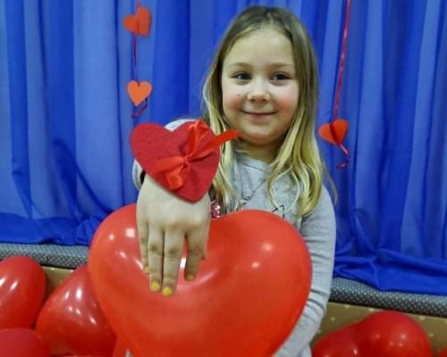
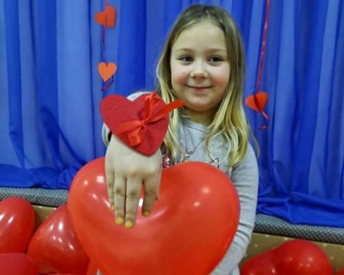
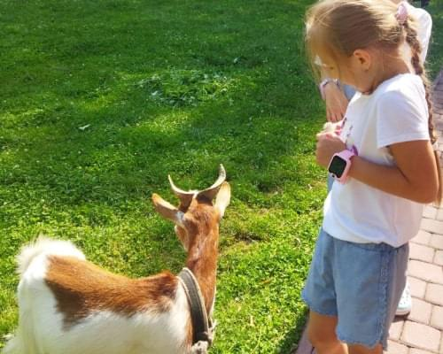
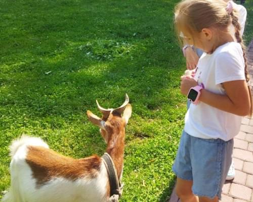

дитячий садок
дитячий садок “Лабораторія маленьких геніїв”
Наш дитячий садочок- це не лише оптимальний підхід до дошкільної освіти із використанням сучасних перевірених методик, а й можливість для кожної дитини розвиватися у власному темпі завдяки спеціально створеним умовам.
Записати дитину
Наша мета - розкрити творчі можливості кожної дитини.
Заняття у нашому приватному садку спрямовані на розвиток здібностей і талантів кожної окремої маленької особистості, розвиток комунікативних навичок, спільну роботу дітей над проектами, пошук творчих рішень, занурення у процес вивчення нового матеріалу.
Записати дитинуЛабораторія маленьких геніїв - це простір, оснащений найсучаснішими методиками навчання
І діти, і батьки оцінять нашу передову освітню програму и «розумний» розвиваючий простір. Кожна мама для своєї дитини хоче знайти найкращий садочок, адже так важливо, щоб дитина щодня була у комфортному середовищі.
Записати дитину
Графік роботи та умови перебування у дитсадку
працюємо з понеділка по п'ятницю, крім державних вихідних днів.
На вибір батьків пропонуємо 3 варіанти відвідвідування садочку:

працює 4 вікові групи:


заняття у нашому садочку

Розвиваюче заняття відповідно до віку дітей:
- Читання
- Математика
- Навколишній світ
- Розвиток мовлення
- Образотворче мистецтво
- Аплікація
- Ліплення
- Лего-конструювання
англійська мова

хореографія
музичні заняття

Наповнюваність груп - 12-15 діток у групі
- Для діток, які залишаються на повний день, організовані ліжечка для відпочинку з 13.00 до 15.30 години.
- Для діток віком від 4 до 7 років, які категорично відмовляються від сну, організовано окрему групу з 13:00 до 16:00.
- В цей час для дітей проводиться творче заняття, також відведено час для ігор та прогулянки.


 



 



галерея
підхід до навчання
На особливу увагу заслуговує наша освітня програма.
ЇЇ «ключовий елемент» - сприйняття кожної дитини як унікальної особистості. Розвиваючий простір сприяє розкриттю талантів і ресурсів кожної дитини, створює умови для гармонійного фізичного, емоційного, духовного, інтелектуального и соціального зростання.
Особливістю роботи садочку є фінський підхід: інтегровані заняття, практичне використання отриманих знань, застосування їх на особистому досвіді, проектна діяльність.
Відзначимо, що нашу програму розроблено провідними методистами і педагогами раннього розвитку України.
Записати дитинуВ ігровій формі, легко і невимушено.
Розвиваючий простір дозволяє розкривати тему з несподіваних сторін. Наповнення розвиваючого середовища постійно змінюється у залежності від теми, яку в певний час вивчають діти.
Також ми використовуємо метод проектів, адже він сприяє поглибленому вивченню, закріпленню матеріалу и систематизації знань.
А ще проектна діяльність допомагає дітям розвивати навички спілкування, виробляє звичку говорити «на публіку», розвиває логічне и креативне мислення.
Записати дитинуМи прагнемо розвинути особистості і закріпити у дітей актуальні навички:
- креативність;
- критичність мислення;
- вміння творчо вирішувати завдання і проблеми різніх ступенів складності;
- комунікабельність;
- вміння співпрацюваті;
- гнучкість мислення;
- ініціативність та лідерські якості;
- соціальні навички (позитивне ставлення до себе і оточуючих, уміння спілкуватися та відстоювати власну думку)
відповіді на часті запитання
Які документи потрібні для вступу?
Паспорт, свідоцтво про народження, довідка від педіатра.
Які речі потрібно підготувати дитині для садочку?
Комплект змінного одягу, змінне взуття, піжаму.
Що таке адаптаційний період?
У нас адаптаційний період триває 5 днів. У перші 5 днів відвідування у дитини є можливість поступово звикати до садочку (дитину можна залишати на 1-2 год або на на півдня і відповідно оплачувати). А у батьків є можливість не сплачувати одразу послуги садочку за місяць, а подивитися чи подобається їм вихователь, умови та режим дня садочку, та найголовніше - чи комфортно у садку дитині!
Де гуляють діти?
У нашому садочку є красивий, облаштований, безпечний та затишний майданчик.
чи є у вас укриття?
Так, у нас комфортне укриттяю
В період відключень світла у вас є світло та тепло?
Так, у нас є резервне джерело освітлення, а дахова котельня обладнана генератором для опалювального періоду.
Чи візьмете дитину, якщо:
Вона в памперсах? Так. Не вміє їсти сама? Так. Не вміє розмовляти? Так. Не вміє впевнено ходити? Ні
З якої дати починається набір?
Ми приймаємо діток протягом усього року за наявності вільних місць у групі.